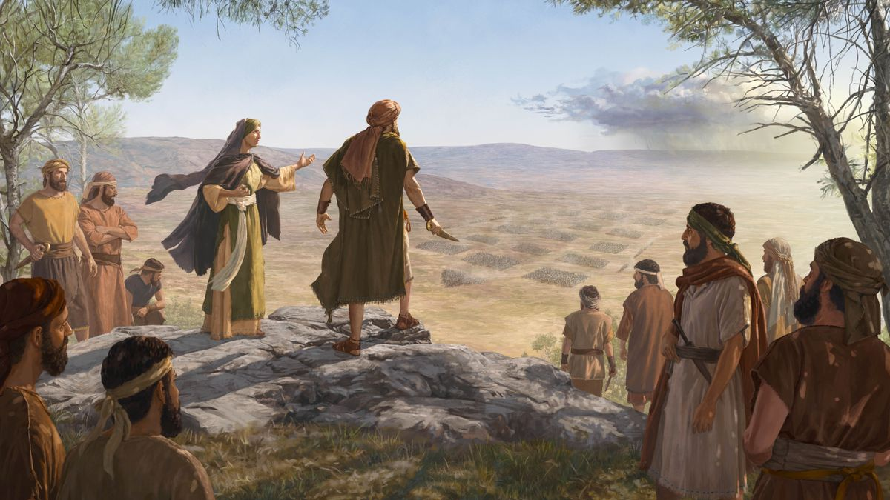
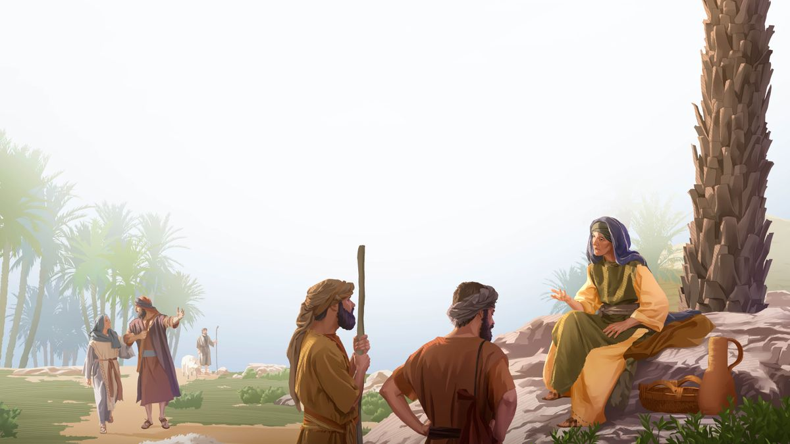
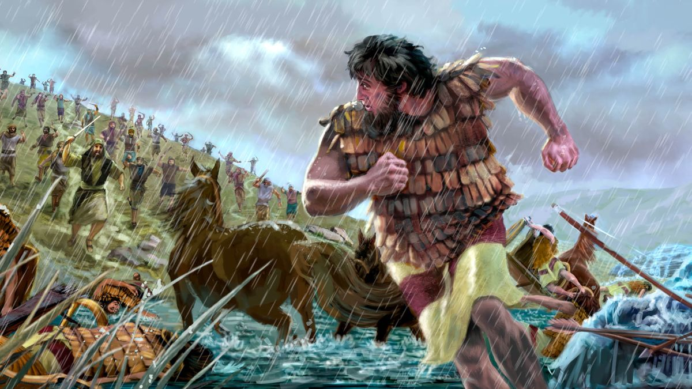

16 Baraque e Débora · semana de 9 a 15 de novembro de 2026
“Certamente irei com você”
Leia o relato na Bíblia: Juízes 4:1-16, 23, 24; 5:1-23
Tempo do estudo: 30 minutos (parte 8 da reunião)
Palavras que aparecem no estudo: profetisa é a mulher que transmitia as mensagens de Jeová. Juiz, aqui, era o homem que Jeová levantava para livrar o povo dos inimigos. Carro de guerra com foices: carroça puxada por cavalos, com lâminas curvas e afiadas presas às rodas.
Cada parágrafo traz o conteúdo resumido, com as frases do capítulo, os textos bíblicos escritos e um link direto para o texto oficial no wol.jw.org.
Era um período difícil em Israel. O povo tinha se rebelado contra Jeová, e, como ele tinha avisado, deixou que os inimigos o oprimissem. Jeová entregou o povo nas mãos do rei cananeu Jabim. O general dele era um homem cruel chamado Sísera, que liderava um grande exército com 900 carros de guerra com foices de ferro.
Por 20 anos, o exército de Sísera espalhou o medo em Israel. Parece que, quando atacavam uma cidade, capturavam as mulheres jovens e as estupravam. Reinava o terror: as estradas e os vilarejos ficavam vazios. E poucos israelitas tinham armas para se defender.
Naquela época vivia Débora, uma mulher corajosa que servia como profetisa de Jeová. Ela também julgava os casos difíceis que o povo trazia. Jeová usou Débora para dar instruções a Baraque, que ele tinha escolhido para ser juiz: reunir um exército de 10 mil homens e levá-los para o monte Tabor. Jeová daria a vitória sobre Sísera.
Baraque não ficou ofendido por receber instruções por meio de uma mulher. Ele até disse que só iria se Débora fosse junto. Isso não era falta de confiança em Jeová: Paulo colocou Baraque numa lista de homens e mulheres de grande fé. Baraque queria de Jeová toda a ajuda possível. Débora respondeu: “Certamente irei com você.” E avisou que Sísera não seria morto por nenhum homem: Deus daria essa tarefa a uma mulher.
Baraque pôs mãos à obra. Reuniu 10 mil homens valentes, que tinham poucas armas, e os preparou do melhor modo que pôde. O exército se reuniu no topo do monte Tabor, que tinha uns 560 metros de altura. De lá, Débora, Baraque e seus homens viam Sísera e seus carros de guerra se aproximando.
Pensando como guerreiro, Baraque talvez esperasse no alto: subindo o monte, os carros ficariam mais lentos. Mas Baraque sabia que aquela batalha não era dele, mas de Jeová. Por meio de Débora, Jeová disse: ataque! Cheios de coragem, Baraque e seus homens desceram correndo o monte até o vale para enfrentar aqueles carros de guerra assustadores.
Um juiz e uma profetisa enfrentaram um general cruel e seus carros de guerra

Do ponto de vista militar, eles não tinham a menor chance. Mas Jeová viu a coragem deles e lançou o exército cananeu em confusão. Começou a chover torrencialmente, o vale de Jezreel virou um lamaçal e os carros atolaram. Os soldados de Sísera tiveram que lutar corpo a corpo. Todos eles morreram.
Sísera conseguiu fugir a pé, saindo do lamaçal até o solo seco. Aquele covarde abandonou seus homens para salvar a própria vida. Baraque foi atrás dele. Enquanto isso, Jeová estava observando tudo e sabia muito bem o que ia fazer com Sísera.
Para considerar
De que maneiras Baraque e Débora mostraram coragem?
Meu comentário comentário base · até 30 s
Do Guia de Pesquisa Juízes 4:9, 14
- w03 15/11 p. 29: Débora “estava disposta a sair de casa”, um lugar mais seguro, para acompanhar Baraque na batalha. “Ela também mostrou fé e coragem.”
- w03 15/11 p. 29: “Exigia fé da parte de todos os que se juntaram a Baraque.” Juízes 5:8: “Não se via nem escudo nem lança no meio de quarenta mil em Israel.”
- w15 1/8 p. 15 § 11: imagine a alegria dos soldados ao ver aquela mulher corajosa marchar com eles para o Tabor, “disposta a arriscar a vida ao lado deles por causa de sua fé em Jeová Deus”.
📍 de onde veio
- JW Library
- Guia de Pesquisa
- Juízes 4:8
- “Pela fé, Baraque derrotou um poderoso exército” (w03 15/11 págs. 28-31)
Para citar: A Sentinela de 15 de novembro de 2003, páginas 28 a 31
- “‘Eu me levantei como mãe em Israel’” (w15 1/8)
- pág. 15, §§ 11-15
Para citar: A Sentinela de 1.º de agosto de 2015, página 15
Analise mais a fundo
1. Como era a vida em Israel na época de Sísera?
(w15 1/8 13 § 6)
Meu comentário comentário base · até 30 s
Do Guia de Pesquisa Juízes 5:6, 7
- w03 15/11 p. 28: um erudito descreve: “A vida pública em Israel era regida pelo medo, toda a comunidade parecia estar paralisada e desamparada.” Por isso o povo clamou a Jeová.
- w17.04 p. 29 § 6: os israelitas que viviam nos campos “tinham medo até de sair de casa”, e não tinham armas nem para atacar nem para se defender.
- w15 1/8, nota b: a canção de Débora indica que Sísera voltava da batalha com moças como despojo (Juízes 5:30). A palavra usada para “moça” significa literalmente “ventre”, o que mostra como essas mulheres eram tratadas.
📍 de onde veio
- JW Library
- Guia de Pesquisa
- Juízes 4:4
- “‘Eu me levantei como mãe em Israel’” (w15 1/8)
- pág. 13, § 6
Para citar: A Sentinela de 1.º de agosto de 2015, página 13, parágrafo 6
- JW Library
- Guia de Pesquisa
- Juízes 4:8
- “Pela fé, Baraque derrotou um poderoso exército” (w03 15/11 págs. 28-31)
Para citar: A Sentinela de 15 de novembro de 2003, páginas 28 a 31
2. Por que Débora geralmente não é incluída entre os 12 juízes que serviram antes do profeta Samuel?
(w86 1/6 31 §§ 6-8)
Meu comentário comentário base · até 30 s
Do Guia de Pesquisa Juízes 4:4; Atos 13:20
- w86 1/6 p. 31: o mesmo vale para Eli, que foi “principalmente sumo sacerdote, não um ‘salvador’ que conduziu Israel à liberdade por meio de batalha” (Neemias 9:27).
- w86 1/6 p. 31: Atos 13:20 diz que foram dados “juízes até Samuel, o profeta”. Isso explica por que Samuel também não costuma ser contado entre os juízes.
- Para não confundir: isso não diminui Débora. A Sentinela de 2015 diz que ela “era juíza” e dava a resposta de Jeová às disputas do povo (Juízes 4:4, 5).
📍 de onde veio
- JW Library
- Guia de Pesquisa
- Juízes 4:4
- “Perguntas dos Leitores” (w86 1/6 pág. 31)
Para citar: A Sentinela de 1.º de junho de 1986, página 31, Perguntas dos Leitores
- JW Library
- Guia de Pesquisa
- Juízes 4:4
- “‘Eu me levantei como mãe em Israel’” (w15 1/8)
- pág. 13, § 6
Para citar: A Sentinela de 1.º de agosto de 2015, página 13, parágrafo 6
3. Em que sentido Débora foi uma “mãe em Israel”?
(Juí. 4:4, 5; 5:7; w15 1/8 14 § 1) A
Meu comentário comentário base · até 30 s

Do Guia de Pesquisa Juízes 5:7
- it-2 “Mãe” § 8: o mesmo sentido aparece em 1 Tessalonicenses 2:7, onde Paulo se compara a “uma mãe lactante” com os seus filhos espirituais. 1 Tessalonicenses 2:7
- w03 15/11 p. 28: Jeová deu a Débora “o privilégio de agir como mãe figurativa de Israel”.
- Na imagem A: Débora sentada debaixo de uma palmeira, resolvendo um problema entre dois homens com ovelhas, enquanto um casal sobe o caminho até ela. É a cena de Juízes 4:5.
- Para hoje: a irmã mais velha que acolhe, ensina e cuida das irmãs mais novas da congregação faz um papel parecido.
📍 de onde veio
- JW Library
- Guia de Pesquisa
- Juízes 5:7
- “‘Eu me levantei como mãe em Israel’” (w15 1/8)
- pág. 14, § 7 (1.º parágrafo da página)
Para citar: A Sentinela de 1.º de agosto de 2015, página 14, parágrafo 7
- JW Library
- Guia de Pesquisa
- Juízes 5:7
- “Mãe” (it-2 par. 8)
Para citar: Estudo Perspicaz das Escrituras, volume 2, verbete “Mãe”
- JW Library
- Guia de Pesquisa
- Juízes 4:8
- “Pela fé, Baraque derrotou um poderoso exército” (w03 15/11 págs. 28-31)
Para citar: A Sentinela de 15 de novembro de 2003, páginas 28 a 31
4. O que Débora e Baraque queriam dizer quando cantaram que “as estrelas lutaram” contra Sísera?
(Juí. 5:20; w05 15/1 25 § 5)
Meu comentário comentário base · até 30 s
Do Guia de Pesquisa Juízes 5:20, 21
- w17.04 p. 30 § 9: “se não fosse por Jeová, não seria muita coincidência cair uma chuva tão forte exatamente ali, bem naquela hora, a ponto de atolar 900 carros de guerra?” E Juízes 4:14, 15 diz três vezes que a vitória foi de Jeová.
- it-1 “Estrela” § 15: como a Bíblia não detalha, “parece ser suficiente” entender a frase como “alguma ação divina, de natureza milagrosa, a favor do exército de Israel”.
- w03 15/11 p. 30: o vale do Quisom é um uádi, um leito de rio que costuma ter pouca água, mas que pode virar uma torrente perigosa depois de um temporal. “A torrente de Quisom os arrastou” (Juízes 5:21).
📍 de onde veio
- JW Library
- Guia de Pesquisa
- Juízes 5:20
- “Destaques do livro de Juízes” (w05 15/1 pág. 25 par. 5)
Para citar: A Sentinela de 15 de janeiro de 2005, página 25
- JW Library
- Guia de Pesquisa
- Juízes 5:20 / 4:3
- “Dê o seu melhor para louvar a Jeová!” (w17.04 págs. 28-32)
Para citar: A Sentinela de abril de 2017, “Dê o seu melhor para louvar a Jeová!”
- JW Library
- Guia de Pesquisa
- Juízes 5:20
- “Estrela” (it-1 par. 15)
Para citar: Estudo Perspicaz das Escrituras, volume 1, verbete “Estrela”
Medite no que aprendeu
Baraque foi humilde e aceitou a ajuda de uma mulher fiel. Em que situações um irmão pode imitar o exemplo dele?
B
Meu comentário comentário base · até 30 s
Do Guia de Pesquisa Juízes 4:8
- w15 1/8 p. 14 § 9: Baraque “reconheceu o valor de ter ali alguém que representava a Jeová” para fortalecer a ele e a seus homens. “Jeová não considerou errado esse pedido.”
- w15 1/8 p. 14 § 10: para Deus, homens e mulheres têm o mesmo valor. “É muito importante que nunca tenhamos uma atitude preconceituosa, algo tão comum hoje.” Gálatas 3:28
- w03 15/11 p. 29: Moisés, Gideão e Jeremias também se sentiram incapazes, e nem por isso foram considerados menos fiéis.
- Uma cena: o irmão novo na pregação que aceita as dicas da irmã pioneira com 30 anos de experiência no território.
📍 de onde veio
- “‘Eu me levantei como mãe em Israel’” (w15 1/8)
- pág. 14, §§ 9-10
Para citar: A Sentinela de 1.º de agosto de 2015, página 14, parágrafos 9 e 10
- JW Library
- Guia de Pesquisa
- Juízes 4:8
- “Pela fé, Baraque derrotou um poderoso exército” (w03 15/11 págs. 28-31)
Para citar: A Sentinela de 15 de novembro de 2003, páginas 28 a 31
Por que Débora precisou de coragem para acompanhar Baraque? Que situações exigem esse tipo de coragem?
Meu comentário comentário base · até 30 s
Do Guia de Pesquisa Juízes 4:9, 10
- w03 15/11 p. 29: Débora “não tentou assumir o controle. Antes, continuou a ser uma serva modesta de Jeová.”
- w03 15/11 p. 28: quando disse “Não foi Jeová quem deu a ordem?”, Débora “negou enfaticamente que tivesse autoridade sobre Baraque”. Ela só transmitiu a ordem de Deus.
- Situações de hoje: a irmã que acompanha uma estudante a um lugar difícil, o irmão que vai junto com outro visitar alguém afastado, a família que se muda para ajudar uma congregação que precisa.
📍 de onde veio
- JW Library
- Guia de Pesquisa
- Juízes 4:8
- “Pela fé, Baraque derrotou um poderoso exército” (w03 15/11 págs. 28-31)
Para citar: A Sentinela de 15 de novembro de 2003, páginas 28 a 31
De que outras maneiras você pode imitar a coragem de Baraque e Débora?
Meu comentário comentário base · até 30 s
Do Guia de Pesquisa Juízes 5:2
- w17.04 p. 31 § 14: “Hoje, nós não mostramos nossa coragem por lutar numa guerra de verdade, mas por dar o nosso melhor na pregação.” E Jeová “não vai esquecer” a disposição de servir (Hebreus 6:10).
- w17.04 p. 31 § 13: Zebulão e Naftali “arriscaram a vida”. Rubem, Dã e Aser deram mais atenção aos rebanhos, aos navios e aos portos. (Juízes 5:15-18)
- w03 15/11 p. 31: obedecer mesmo quando o pedido de Deus parece contrariar o raciocínio humano. As instruções dele são sempre para o nosso bem. Isaías 48:17, 18
- Para os de idade: nem todos podem descer o monte correndo. Mas o cântico elogia “o povo que se ofereceu voluntariamente” (Juízes 5:2). Oferecer o que dá, uma carta, um telefonema, a presença na reunião, também é se oferecer.
📍 de onde veio
- JW Library
- Guia de Pesquisa
- Juízes 5:20 / 4:3
- “Dê o seu melhor para louvar a Jeová!” (w17.04 págs. 28-32)
Para citar: A Sentinela de abril de 2017, “Dê o seu melhor para louvar a Jeová!”
- “‘Eu me levantei como mãe em Israel’” (w15 1/8)
- pág. 16, § 16
Para citar: A Sentinela de 1.º de agosto de 2015, página 16, parágrafo 16
- JW Library
- Guia de Pesquisa
- Juízes 4:8
- “Pela fé, Baraque derrotou um poderoso exército” (w03 15/11 págs. 28-31)
Para citar: A Sentinela de 15 de novembro de 2003, páginas 28 a 31
Pense no quadro completo
O que esse relato me ensina sobre Jeová?
Meu comentário comentário base · até 30 s
Do Guia de Pesquisa Juízes 4:14, 15
- w15 1/8 p. 14 § 7: o terror durou 20 anos, “até que Jeová viu provas de que seu obstinado povo estava pronto para mudar”.
- w03 15/11 p. 28: em Juízes, o padrão se repete: “o clamor sincero pela misericórdia de Deus foi seguido pela designação divina de um salvador”.
- w15 1/8 p. 16 § 16: “Jeová não mudou. Ele ainda defende os que têm fé e confiança nele.”
📍 de onde veio
- JW Library
- Guia de Pesquisa
- Juízes 5:20 / 4:3
- “Dê o seu melhor para louvar a Jeová!” (w17.04 págs. 28-32)
Para citar: A Sentinela de abril de 2017, “Dê o seu melhor para louvar a Jeová!”
- JW Library
- Guia de Pesquisa
- Juízes 5:7
- “‘Eu me levantei como mãe em Israel’” (w15 1/8)
- pág. 14, § 7 (1.º parágrafo da página)
Para citar: A Sentinela de 1.º de agosto de 2015, página 14, parágrafo 7
- “‘Eu me levantei como mãe em Israel’” (w15 1/8)
- pág. 16, § 16
Para citar: A Sentinela de 1.º de agosto de 2015, página 16, parágrafo 16
- JW Library
- Guia de Pesquisa
- Juízes 4:8
- “Pela fé, Baraque derrotou um poderoso exército” (w03 15/11 págs. 28-31)
Para citar: A Sentinela de 15 de novembro de 2003, páginas 28 a 31
Como esse relato está relacionado com o propósito de Jeová?
Meu comentário comentário base · até 30 s
Da Sentinela Juízes 5:31
- w17.04 p. 32 § 16: quando somos obedientes e apoiamos o governo de Deus, “damos a Jeová algo que ele não tem”: uma resposta para Satanás (Provérbios 27:11).
- w17.04 p. 32 § 17: no Armagedom, “nenhum humano vai precisar se oferecer para lutar com o inimigo”. Vamos ter que “ficar parados e ver a salvação de Jeová” (2 Crônicas 20:17).
- w03 15/11 p. 31: o final do cântico será verdade “quando Jeová acabar com o iníquo mundo de Satanás”.
📍 de onde veio
- JW Library
- Guia de Pesquisa
- Juízes 5:20 / 4:3
- “Dê o seu melhor para louvar a Jeová!” (w17.04 págs. 28-32)
Para citar: A Sentinela de abril de 2017, “Dê o seu melhor para louvar a Jeová!”
- JW Library
- Guia de Pesquisa
- Juízes 4:8
- “Pela fé, Baraque derrotou um poderoso exército” (w03 15/11 págs. 28-31)
Para citar: A Sentinela de 15 de novembro de 2003, páginas 28 a 31
O que eu gostaria de perguntar para Baraque e Débora quando eles forem ressuscitados?
Meu comentário comentário base · até 30 s
Aprenda mais
O que o exemplo de Baraque e Débora nos ensina sobre confiança, modéstia e obediência?
“Pela fé, Baraque derrotou um poderoso exército” (w03 15/11 28-31)
Meu comentário comentário base · até 30 s
Da Sentinela Juízes 4:8, 14; Hebreus 11:32-34
- w05 15/1 p. 25: a insistência de Baraque para que Débora fosse “não era um sinal de fraqueza, mas de forte fé”.
- w03 15/11 p. 29: “Como você teria se sentido caso estivesse no exército de Baraque? Será que se teria lembrado prontamente que a orientação era de Jeová?”
- w03 15/11 p. 31: “A liberdade de várias espécies de opressões é possível aos arrependidos que recorrem a Deus e exercem fé nele.”
📍 de onde veio
- JW Library
- Guia de Pesquisa
- Juízes 4:8
- “Pela fé, Baraque derrotou um poderoso exército” (w03 15/11 págs. 28-31)
Para citar: A Sentinela de 15 de novembro de 2003, páginas 28 a 31
- JW Library
- Guia de Pesquisa
- Juízes 4:8
- “Destaques do livro de Juízes” (w05 15/1 pág. 25 par. 4)
Para citar: A Sentinela de 15 de janeiro de 2005, página 25

Veja como este relato nos faz ter certeza de que Jeová se importa com o que fazemos para ele.
“Dê o seu melhor para louvar a Jeová!” (w17.04 28-32), no wol.jw.org.
O que o exemplo de Baraque e Débora nos ensina sobre confiança, modéstia e obediência?
“Pela fé, Baraque derrotou um poderoso exército” (w03 15/11 28-31), no wol.jw.org.
Guia de Pesquisa: Juízes 4 e 5
O que o Guia de Pesquisa do seu JW Library lista para os versículos principais. Bom para achar um comentário diferente.
- Juízes 4:4 e 5:7 (Débora, “mãe em Israel”): “‘Eu me levantei como mãe em Israel’” (w15 1/8 13-16); Perguntas dos Leitores (w86 1/6 31); it-1 “Débora”; it-2 “Mãe” e “Profetisa”
- Juízes 4:6, 8 (o pedido de Baraque): “Pela fé, Baraque derrotou um poderoso exército” (w03 15/11 28-29); “Destaques do livro de Juízes” (w05 15/1 25 § 4); it-2 “Tabor”
- Juízes 4:14, 15 (a vitória): “A salvação pertence a Jeová” (w98 15/12 11 § 9); “Do Tabor à vitória!” (w90 1/5 17)
- Juízes 5:20, 21 (as estrelas e o Quisom): it-1 “Estrela” § 15; it-2 “Quisom, Vale da torrente do”; w17.04 30 § 9; g94 8/7 6
- Hebreus 11:32 (Baraque na lista da fé): “O mundo não era digno deles” (w87 15/1 16-17); si p. 50 § 27
Roteiro de 30 minutos
Estudo de livro, oito parágrafos e as quatro seções de pergunta. Os tempos são referência: o que passar de um item, tire do outro.
Abertura com uma pergunta
“Você já recebeu uma designação que parecia grande demais para você?” Depois diga: Baraque recebeu uma assim, e pediu ajuda. Débora disse: “Certamente irei com você.”
Leitura dos oito parágrafos
Designe um irmão. Leia §1 a §6, a frase em destaque com a imagem do monte Tabor, e depois §7 e §8.
Leituras bíblicas com a assistência
Juízes 4:8, 9, Juízes 4:14, 15 e Juízes 5:20, 21. O pedido de Baraque, a descida do monte e a chuva que atolou os carros.
Para considerar
A coragem dos dois. Aceite dois comentários: um sobre Baraque e outro sobre Débora.
Analise mais a fundo
Quatro perguntas, uns 2 minutos cada. Mostre a imagem A na pergunta da “mãe em Israel”.
Medite no que aprendeu
Mostre a imagem B. Na pergunta sobre aceitar ajuda, dê espaço para um irmão comentar com humildade.
Pense no quadro completo
Sobre Jeová, o propósito e a pergunta da ressurreição, que pode ser rápida.
Aprenda mais
Recomende os dois artigos: “Dê o seu melhor para louvar a Jeová!” e “Pela fé, Baraque derrotou um poderoso exército”.
Encerramento
Feche com: “Baraque desceu o monte porque sabia que a batalha era de Jeová. E Jeová mandou a chuva.”
Se o tempo apertar
Pode cortar: a pergunta 2 de “Analise mais a fundo” (resumindo em uma frase), a leitura de Juízes 5:20, 21 e a última pergunta do quadro completo.
Não pode faltar: o pedido de Baraque, que era fé e não fraqueza; a “mãe em Israel”; a descida do monte; a chuva que atolou os carros; e a imagem B.
Resumo: os pontos altos deste estudo
Para o encerramento, ou para revisar depois em casa.
O caminho que percorremos
- Vinte anos de terror. O povo se rebelou, e Sísera com 900 carros espalhou o medo. §1, §2
- Uma profetisa e um juiz humilde. Débora transmite a ordem; Baraque pede que ela vá junto. §3, §4
- Do alto do Tabor para o vale. 10 mil quase sem armas descem correndo o monte. §5, §6
- Jeová lutou pelo seu povo. A chuva, a lama e o general covarde fugindo a pé. §7, §8
Os sete pontos altos
- Israel sofreu 20 anos de terror porque se rebelou contra Jeová.
- Débora era profetisa e julgava o povo debaixo de uma palmeira: uma “mãe em Israel”.
- Baraque pediu que Débora fosse junto. Não era fraqueza, era fé: ela representava Jeová.
- Débora saiu da segurança de casa e foi para a guerra, sem tentar mandar em ninguém.
- Do ponto de vista militar, era loucura descer o monte. Baraque desceu porque a batalha era de Jeová.
- A chuva atolou 900 carros de guerra. A Bíblia diz três vezes que a vitória foi de Jeová.
- Hoje mostramos essa coragem dando o nosso melhor na pregação.
Três frases para o encerramento
- “Baraque pediu ajuda, e isso não foi falta de fé.”
- “Débora foi junto para apoiar, não para mandar.”
- “Eles desceram o monte. Jeová mandou a chuva.”
Suas respostas
Cada campo já vem com um comentário pronto. O que você ajustar fica salvo automaticamente neste navegador, neste aparelho. Para levar para outro aparelho, baixe o arquivo aqui e carregue no outro lado.
O arquivo é um .json com os seus comentários e as anotações marcadas como vistas. Carregar substitui o que estiver escrito nesta página, e a página avisa antes.
Preparação baseada no capítulo 16 do livro Ande Corajosamente com Deus, “Certamente irei com você”. Publicações consultadas: A Sentinela de 1/8/2015, 15/1/2005, 15/11/2003, abril de 2017 e 1/6/1986; Estudo Perspicaz, verbetes “Estrela”, “Mãe” e “Débora”; Despertai! de 8/7/1994; Guia de Pesquisa do JW Library. Bíblia: Tradução do Novo Mundo da Bíblia Sagrada, com 265 versículos incluídos nesta cópia para funcionar sem internet.
Os resumos, os comentários base, as anotações e o roteiro são notas de preparação pessoal, não material publicado pelas Testemunhas de Jeová. O capítulo, as imagens e o texto da Bíblia são propriedade da Watch Tower Bible and Tract Society.